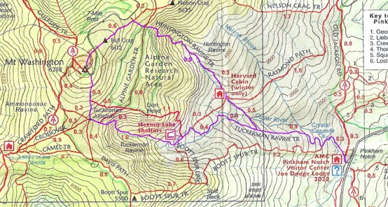

The Tallest Peaks in the Northeastern United States
The White Mountains are part of the Appalachian Mountain Range which runs through most of eastern US.
It is the tallest mountain in the Northeastern United States with a height of 6288 feet. It is located in New Hampshire and its peak is super windy. There is a sign on the summit that is the heighest point on the mountain, a casual restaurant serving clam chowder, soups, snacks and candy.
2. Tuckerman RavineIt is a super steep ravine that only an extremely advanced skier can ski down. It's almost like skiing down a cliff. Many people come to watch the skiers. You have to hike up the Tuckerman Ravine Trail from the AMC Pinkham Notch Visitor Center. This is a 2.4 mile hike.
3. AMC Huts AMC huts are a much needed part of the Appalachian Trail. One of the most famous ones is Lake in the Clouds which faces Mt. Washington. Their food is pretty decent too. They have good quality scrambled eggs, sausages, oatmeal, and baked goods. They believe in a zero waste policy which means if you get to Lake of the Clouds on time, you might be able to enjoy some free extras such as scrambled eggs and sausages. All of the AMC huts have compostable toilets(don't worry they have toilet paper.)